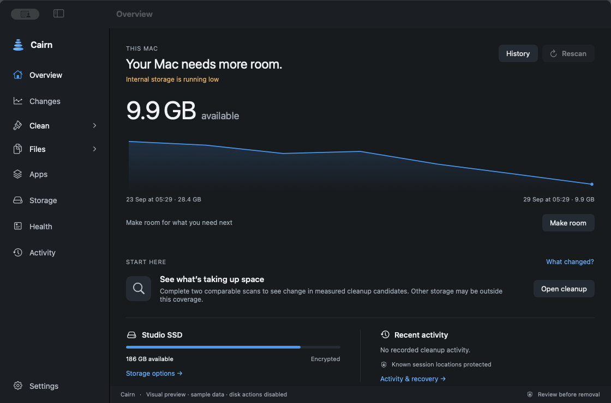
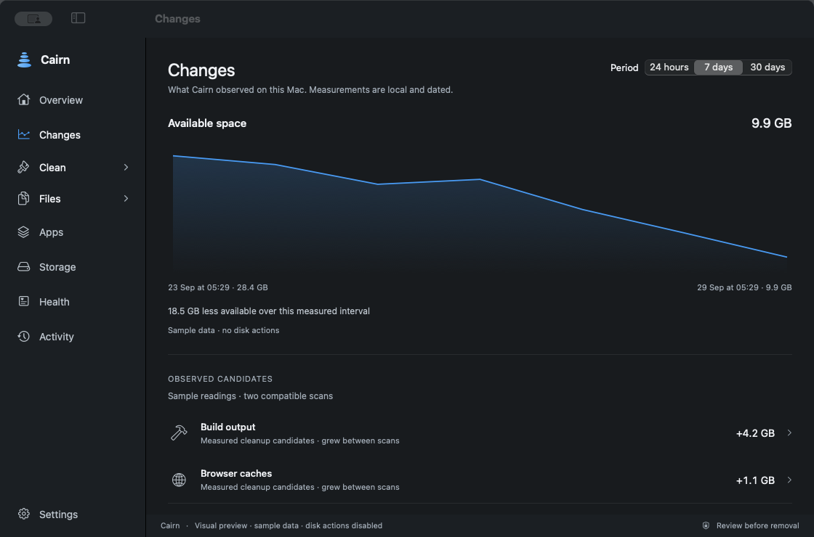
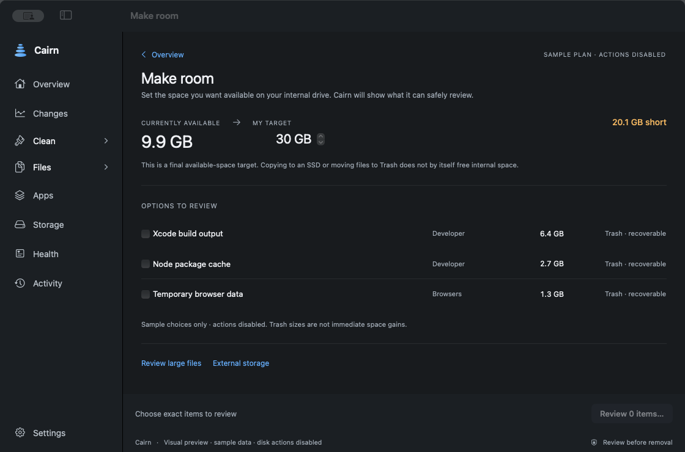
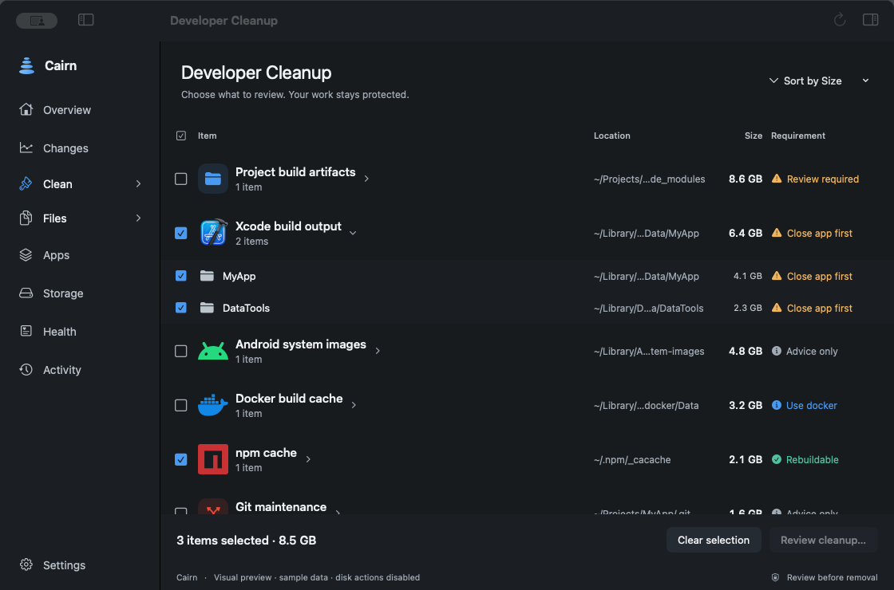
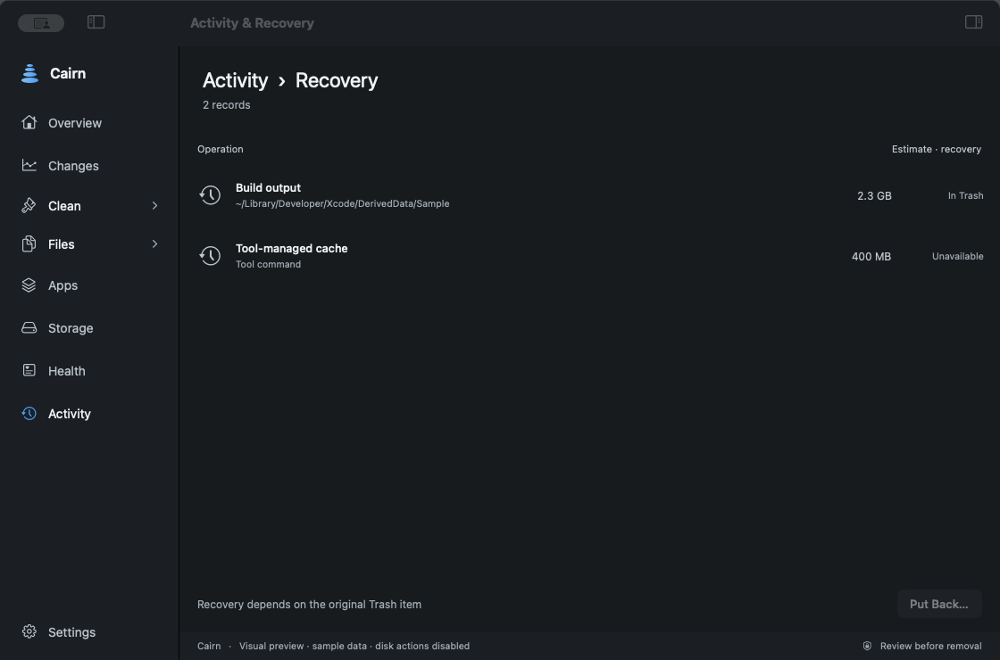

Xcode and project output
DerivedData, simulator support, and generated project folders, with their requirements shown before action.
CAIRN / FOR MACOS
Make room for the next build without treating projects, sessions, and credentials like junk. Cairn shows what changed, lets you review exact paths, and checks what happened after you act.

THE MOMENT
DerivedData, simulators, package caches, Docker, local models. A working Mac fills up with things that need different decisions. Some can be rebuilt. Some are the work itself.
One example, using the labelled sample data shown in the app previews.
~/Projects/my-app/.gitProtected~/Library/Developer/Xcode/DerivedDataReview after quitting Xcode~/Projects/my-app/node_modulesCheck rebuildability~/.codex/sessionsProtectedThese paths explain the principle. Cairn checks the actual location and requirements before a change.
01 / UNDERSTAND
In this example, available space has fallen since the last reading. Cairn shows dated measurements and compares compatible scans so you can see where measured candidates grew.
When a scan is partial or a change sits outside that coverage, Cairn says so. It does not guess which app wrote every byte.

02 / MAKE ROOM
Set 30 GB as the available-space target for the update, simulator, or project you are trying to finish. Cairn shows the shortfall from the measured 9.9 GB and offers eligible items for review.
Moving a file to Trash is a recoverable action, not an instant space gain. Cairn checks available capacity again before saying the target was met.

03 / REVIEW
A folder called “cache” is not permission to delete it. Cairn lets you inspect the exact location, size, purpose, and requirements before approving a change.
Build output, package caches, and tool data do not all carry the same risk. An uncertain environment asks for review; a running app may need to close first.
What stays protected

THE HARD STOP
An AI-assisted project is more than its repository. The conversation that shaped it, source-control state, credentials, and recovery data can matter just as much as the code. Cairn guards known locations, even inside a larger candidate, and asks for review when rebuildability is uncertain.
04 / VERIFY
A selection is a plan, not a result. Cairn records actions locally, keeps recoverable Trash items in Activity, and checks available capacity separately. If the Mac is still short of 30 GB, the target stays open. If an action is interrupted, Cairn asks for inspection instead of silently running it again.

What was selected or moved.
Whether a recorded item can be put back.
A fresh reading of the Mac, never inferred from the file size.
THE REST OF YOUR MAC
Cairn starts where developers lose space: build output, dependencies, and local tools. The same careful review extends to the other places a working Mac fills up.
DerivedData, simulator support, and generated project folders, with their requirements shown before action.
Node, Python, Rust, and other developer caches. Rebuildability and active tools affect what Cairn recommends.
Find forgotten giants and review duplicate files or app data without folding them into a one-click total.
Look at temporary data from browsers and creator tools while keeping saved work distinct from cache.
Review local model downloads and AI app caches. Known conversation and session data stays protected.
Verify eligible export copies to a supported encrypted drive with originals retained, or opt into low-space alerts. Neither runs automatic cleanup.
THE NAME
A cairn is a stack of stones that marks a path. Say “kairn” in the UK or “kern” in the US. When your Mac is full, the next step should feel clear without losing what brought you here.